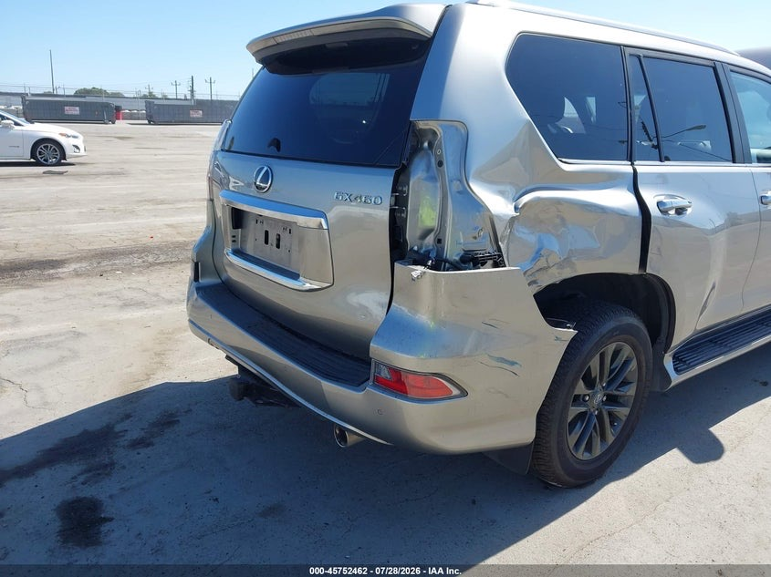

Rear Impact
Assess the collision damage and identify what the impact affected beyond the visible bodywork.
This GX 460 took a hard hit at the rear. What looked like a body repair quickly became a deeper recovery involving the rear structure, differential and driver-side axle.

The GX arrived with significant rear-impact damage. The collision did not stop at the bodywork — it also affected the rear drivetrain, including the differential and driver-side axle, leaving the Lexus unable to move normally.
That changed the order of the rebuild. Before the mechanical work could begin, the damaged rear structure needed to be corrected enough to get the GX moving again.
The first phase went to the body shop. With the rear damage interfering with the vehicle, the priority was restoring the damaged structure before tackling the drivetrain underneath.
This is not the finish line. Once the body repair gives the GX the clearance it needs, the project moves back into the Lakache Auto garage for the mechanical phase.
With the rear structure addressed first, the recovery moves underneath the GX and into the components damaged by the impact.
Assess the collision damage and identify what the impact affected beyond the visible bodywork.
Repair the damaged rear structure enough to free the vehicle and prepare it for the mechanical work.
Replace the damaged rear differential and inspect the surrounding drivetrain components before testing.
Replace the affected axle, verify the rear assembly and work toward getting the GX driving correctly again.
The body repair is only the first major step. The differential and driver-side axle remain central to the mechanical recovery. Those repairs will determine when the GX can return to moving and driving as it should.
This page will continue to evolve with the project, documenting the Lexus from its rear-impact condition through drivetrain repair, testing and the final recovery.
The episode is still in production. The project page will grow with the build as the Lexus moves from body repair into the differential and axle work.
← BACK TO THE BUILDS